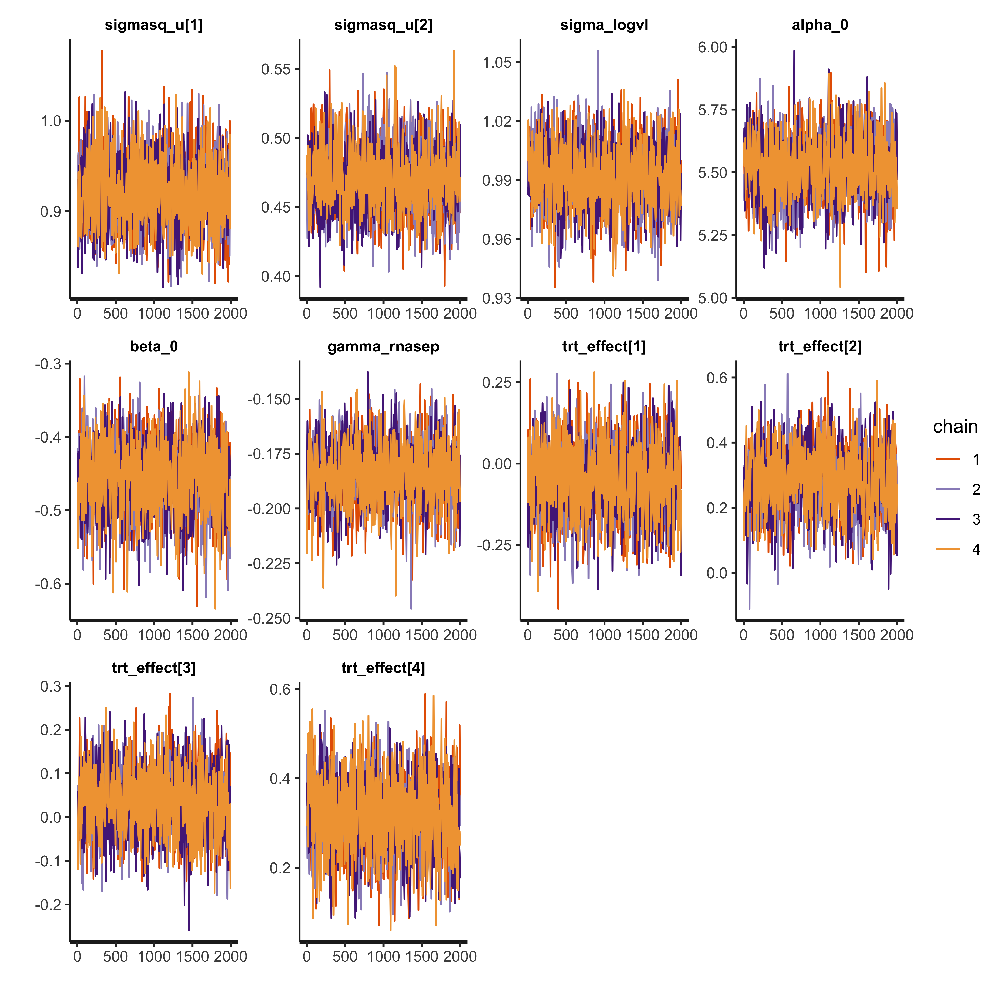
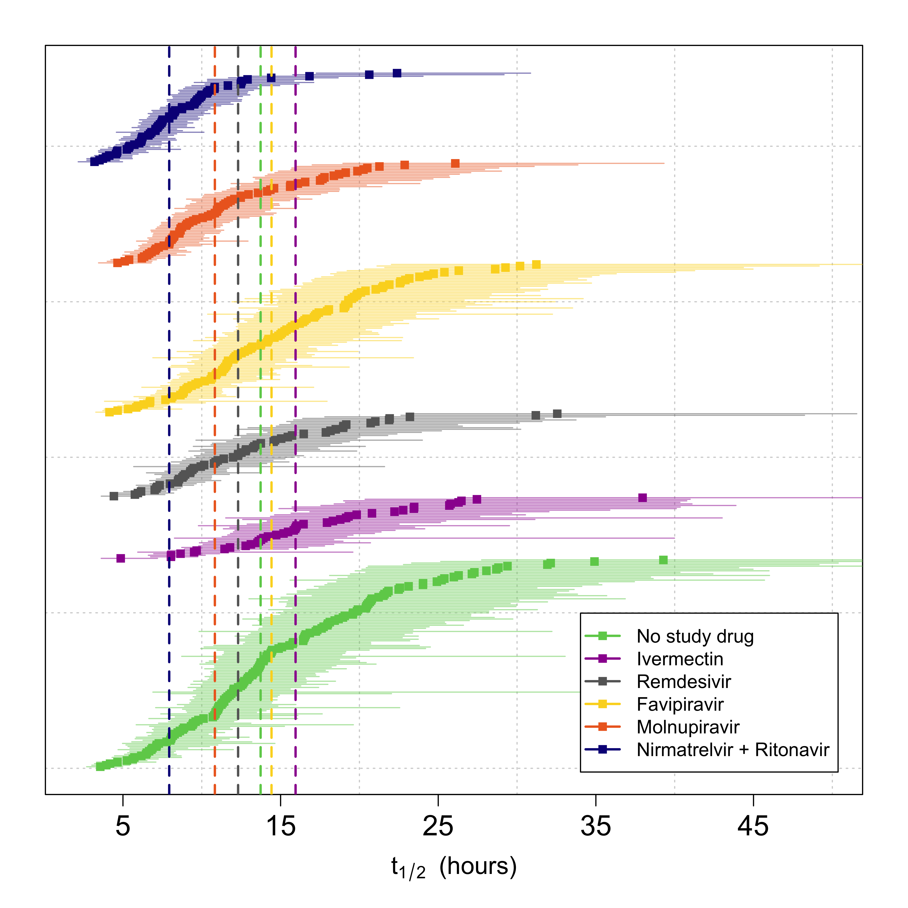
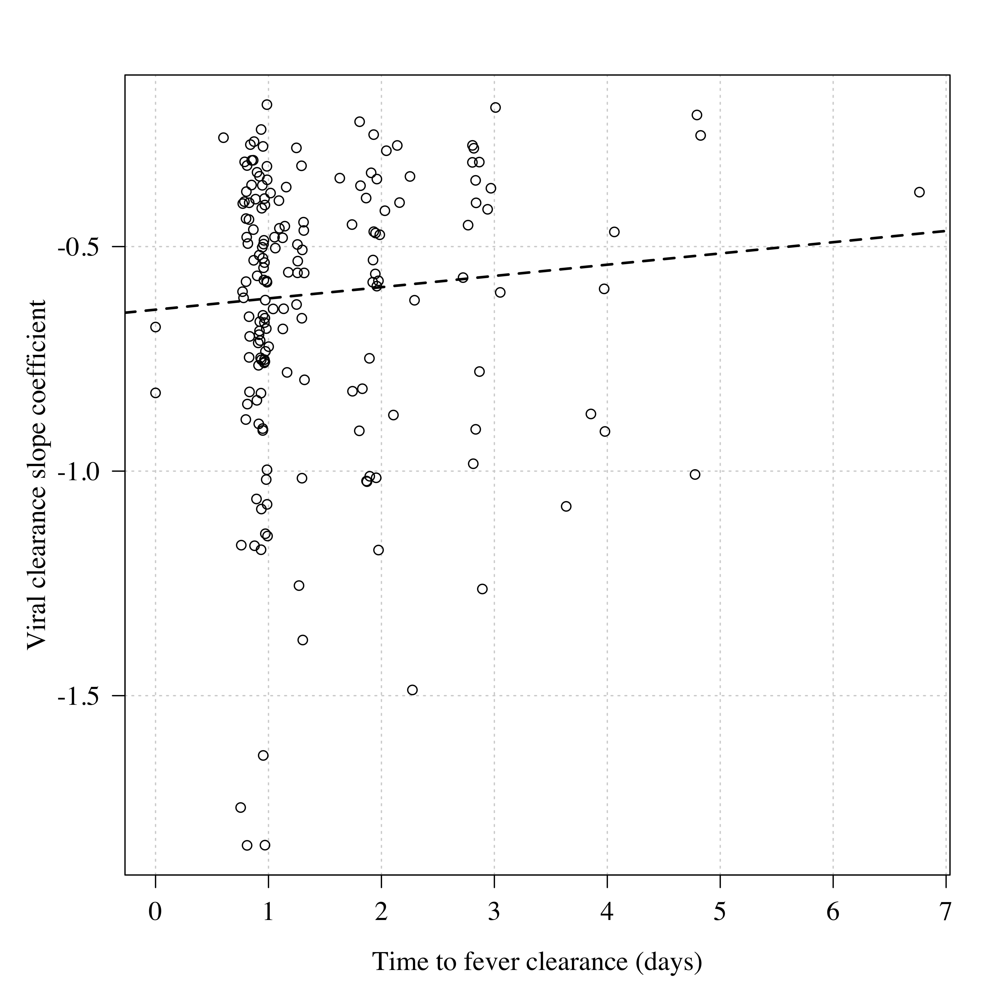

knitr::opts_chunk$set(cache = F, cache.comments = FALSE,
echo = F, include = TRUE,
fig.width = 8, fig.height = 8,
fig.pos = 'H',dev = 'png', dpi = 300)IPD meta-analysis
Loading required package: StanHeadersLoading required package: ggplot2rstan (Version 2.21.7, GitRev: 2e1f913d3ca3)For execution on a local, multicore CPU with excess RAM we recommend calling
options(mc.cores = parallel::detectCores()).
To avoid recompilation of unchanged Stan programs, we recommend calling
rstan_options(auto_write = TRUE)── Attaching packages ─────────────────────────────────────── tidyverse 1.3.2 ──
✔ tibble 3.2.1 ✔ dplyr 1.1.2
✔ tidyr 1.2.1 ✔ stringr 1.5.0
✔ readr 2.1.3 ✔ forcats 0.5.2
✔ purrr 0.3.5
── Conflicts ────────────────────────────────────────── tidyverse_conflicts() ──
✖ tidyr::extract() masks rstan::extract()
✖ dplyr::filter() masks stats::filter()
✖ dplyr::lag() masks stats::lag()
Attaching package: 'kableExtra'
The following object is masked from 'package:dplyr':
group_rows
Loading required package: ggpubr
Attaching package: 'survminer'
The following object is masked from 'package:survival':
myeloma
Loading required package: timechange
Attaching package: 'lubridate'
The following objects are masked from 'package:base':
date, intersect, setdiff, union _
platform aarch64-apple-darwin20
arch aarch64
os darwin20
system aarch64, darwin20
status
major 4
minor 2.2
year 2022
month 10
day 31
svn rev 83211
language R
version.string R version 4.2.2 (2022-10-31)
nickname Innocent and Trusting R version 4.2.2 (2022-10-31)
Platform: aarch64-apple-darwin20 (64-bit)
Running under: macOS Ventura 13.2.1
Matrix products: default
BLAS: /Library/Frameworks/R.framework/Versions/4.2-arm64/Resources/lib/libRblas.0.dylib
LAPACK: /Library/Frameworks/R.framework/Versions/4.2-arm64/Resources/lib/libRlapack.dylib
locale:
[1] en_US.UTF-8/en_US.UTF-8/en_US.UTF-8/C/en_US.UTF-8/en_US.UTF-8
attached base packages:
[1] stats graphics grDevices utils datasets methods base
other attached packages:
[1] lubridate_1.9.0 timechange_0.1.1 survminer_0.4.9
[4] ggpubr_0.5.0 survival_3.4-0 RColorBrewer_1.1-3
[7] finalfit_1.0.6 kableExtra_1.3.4 forcats_0.5.2
[10] stringr_1.5.0 dplyr_1.1.2 purrr_0.3.5
[13] readr_2.1.3 tidyr_1.2.1 tibble_3.2.1
[16] tidyverse_1.3.2 rstan_2.21.7 ggplot2_3.4.0
[19] StanHeaders_2.21.0-7
loaded via a namespace (and not attached):
[1] matrixStats_0.63.0 fs_1.5.2 webshot_0.5.4
[4] httr_1.4.4 tools_4.2.2 backports_1.4.1
[7] utf8_1.2.3 R6_2.5.1 DBI_1.1.3
[10] colorspace_2.0-3 withr_2.5.0 tidyselect_1.2.0
[13] gridExtra_2.3 prettyunits_1.1.1 processx_3.8.0
[16] compiler_4.2.2 cli_3.6.1 rvest_1.0.3
[19] mice_3.15.0 xml2_1.3.3 scales_1.2.1
[22] survMisc_0.5.6 callr_3.7.3 systemfonts_1.0.4
[25] digest_0.6.31 rmarkdown_2.19 svglite_2.1.1
[28] pkgconfig_2.0.3 htmltools_0.5.4 dbplyr_2.2.1
[31] fastmap_1.1.0 htmlwidgets_1.6.0 rlang_1.1.0
[34] readxl_1.4.1 rstudioapi_0.14 generics_0.1.3
[37] zoo_1.8-11 jsonlite_1.8.4 car_3.1-1
[40] googlesheets4_1.0.1 inline_0.3.19 magrittr_2.0.3
[43] loo_2.5.1 Matrix_1.5-1 Rcpp_1.0.10
[46] munsell_0.5.0 fansi_1.0.4 abind_1.4-5
[49] lifecycle_1.0.3 stringi_1.7.8 yaml_2.3.6
[52] carData_3.0-5 pkgbuild_1.4.0 grid_4.2.2
[55] parallel_4.2.2 crayon_1.5.2 lattice_0.20-45
[58] haven_2.5.1 splines_4.2.2 hms_1.1.2
[61] knitr_1.41 ps_1.7.2 pillar_1.9.0
[64] boot_1.3-28 ggsignif_0.6.4 codetools_0.2-18
[67] stats4_4.2.2 reprex_2.0.2 glue_1.6.2
[70] evaluate_0.19 data.table_1.14.6 RcppParallel_5.1.5
[73] modelr_0.1.10 vctrs_0.6.2 tzdb_0.3.0
[76] cellranger_1.1.0 gtable_0.3.1 km.ci_0.5-6
[79] assertthat_0.2.1 xfun_0.35 xtable_1.8-4
[82] broom_1.0.2 rstatix_0.7.1 googledrive_2.0.0
[85] viridisLite_0.4.1 gargle_1.2.1 KMsurv_0.1-5
[88] ellipsis_0.3.2 Warning in checkStrict(plot_serial_data): global variables used: daily_VL, ID,
log10_viral_load, Time, Timepoint_ID, Trt, trt_colorWarning in checkStrict(calculate_fever_clearance): global variables used: ID,
TimeLoad data
Set up analysis
Missing patients in Ivermectin arm:
[1] "PLT-TH58-006" "PLT-TH58-008" "PLT-TH57-001" "PLT-TH57-003" NA
Missing patients in Remdesivir arm:
[1] "PLT-TH58-005" "PLT-TH58-009" "PLT-TH57-007" "PLT-TH57-008" "PLT-BR3-003"
[6] "PLT-BR3-012" "PLT-BR3-013" "PLT-BR3-016" "PLT-BR3-019" "PLT-BR3-022"
[11] "PLT-BR3-026" "PLT-BR3-027" "PLT-BR3-035" NA
Missing patients in No study drug arm:
[1] "PLT-TH1-056" "PLT-TH1-660" "PLT-TH1-668" "PLT-TH1-669" "PLT-TH1-670"
[6] "PLT-TH1-673" "PLT-TH1-685" "PLT-TH1-687" "PLT-TH1-689" "PLT-TH1-700"
[11] "PLT-TH1-703" "PLT-TH1-706" "PLT-TH1-708" "PLT-TH1-717" "PLT-TH1-721"
[16] "PLT-TH1-722" "PLT-TH1-724" "PLT-TH1-725" "PLT-TH1-739" "PLT-TH1-746"
[21] "PLT-TH1-747" "PLT-TH1-753" "PLT-TH1-759" "PLT-TH1-766" "PLT-TH1-768"
[26] "PLT-TH1-779" "PLT-TH1-781" "PLT-TH1-785" "PLT-TH1-788" "PLT-TH1-789"
[31] "PLT-TH1-790" "PLT-TH1-797" "PLT-TH1-799" "PLT-TH1-808" "PLT-TH1-811"
[36] "PLT-TH1-815" "PLT-TH1-819" "PLT-TH1-822" "PLT-TH1-823" "PLT-TH1-826"
[41] "PLT-TH1-839" "PLT-TH1-840" "PLT-TH1-841" "PLT-TH1-842" "PLT-TH1-845"
[46] "PLT-TH1-846" "PLT-TH1-851" "PLT-TH1-857" "PLT-TH1-859" "PLT-TH1-865"
[51] "PLT-TH1-866" "PLT-TH1-870" "PLT-TH1-875" "PLT-TH1-880" "PLT-TH1-883"
[56] "PLT-TH1-889" "PLT-TH1-890" "PLT-TH1-892" "PLT-TH1-908" "PLT-TH1-911"
[61] "PLT-TH1-915" "PLT-TH1-924" "PLT-TH1-934" "PLT-TH1-936" "PLT-TH1-937"
[66] "PLT-TH1-943" "PLT-TH1-948" "PLT-TH1-950" "PLT-TH1-954" "PLT-TH1-956"
[71] "PLT-TH1-960" "PLT-TH1-965" "PLT-TH1-966" "PLT-TH1-979" "PLT-TH1-981"
[76] "PLT-TH1-984" "PLT-TH1-986" "PLT-TH1-989" "PLT-TH1-995" "PLT-TH1-999"
[81] "PLT-TH1-1001" "PLT-TH58-002" "PLT-TH58-004" "PLT-TH57-002" "PLT-TH57-009"
[86] "PLT-TH57-010" "PLT-BR3-002" "PLT-BR3-004" "PLT-BR3-008" "PLT-BR3-017"
[91] "PLT-BR3-021" "PLT-BR3-030" "PLT-BR3-031" "PLT-BR3-032" "PLT-BR3-038"
[96] "PLT-BR3-041" "PLT-BR3-044" "PLT-BR3-050" "PLT-BR3-055" "PLT-BR3-057"
[101] "PLT-BR3-060" "PLT-BR3-064" "PLT-BR3-066" "PLT-BR3-069" "PLT-BR3-071"
[106] "PLT-BR3-082" "PLT-BR3-085" "PLT-BR3-086" "PLT-BR3-090" "PLT-BR3-092"
[111] "PLT-BR3-094" "PLT-BR3-096" NA "PLT-BR3-102"
Missing patients in Favipiravir arm:
[1] "PLT-TH57-004" "PLT-TH57-006" "PLT-BR3-001" "PLT-BR3-005" "PLT-BR3-007"
[6] "PLT-BR3-009" "PLT-BR3-014" "PLT-BR3-015" "PLT-BR3-023" "PLT-BR3-025"
[11] "PLT-BR3-028" "PLT-BR3-029" "PLT-BR3-036" "PLT-BR3-037" "PLT-BR3-047"
[16] "PLT-BR3-049" "PLT-BR3-051" "PLT-BR3-056" "PLT-BR3-058" "PLT-BR3-059"
[21] NA
Missing patients in Molnupiravir arm:
[1] NA
Missing patients in Nirmatrelvir + Ritonavir arm:
[1] "PLT-TH1-450" "PLT-TH1-661" "PLT-TH1-662" "PLT-TH1-663" "PLT-TH1-672"
[6] "PLT-TH1-679" "PLT-TH1-682" "PLT-TH1-684" "PLT-TH1-696" "PLT-TH1-699"
[11] "PLT-TH1-704" "PLT-TH1-709" "PLT-TH1-715" "PLT-TH1-716" "PLT-TH1-719"
[16] "PLT-TH1-720" "PLT-TH1-729" "PLT-TH1-734" "PLT-TH1-736" "PLT-TH1-751"
[21] "PLT-TH1-752" "PLT-TH1-754" "PLT-TH1-757" "PLT-TH1-764" "PLT-TH1-765"
[26] "PLT-TH1-772" "PLT-TH1-773" "PLT-TH1-777" "PLT-TH1-782" "PLT-TH1-784"
[31] "PLT-TH1-787" "PLT-TH1-792" "PLT-TH1-795" "PLT-TH1-800" "PLT-TH1-801"
[36] "PLT-TH1-805" "PLT-TH1-807" "PLT-TH1-809" "PLT-TH1-820" "PLT-TH1-827"
[41] "PLT-TH1-829" "PLT-TH1-831" "PLT-TH1-835" "PLT-TH1-838" "PLT-TH1-843"
[46] "PLT-TH1-844" "PLT-TH1-850" "PLT-TH1-853" "PLT-TH1-854" "PLT-TH1-855"
[51] "PLT-TH1-856" "PLT-TH1-858" "PLT-TH1-860" "PLT-TH1-862" "PLT-TH1-874"
[56] "PLT-TH1-877" "PLT-TH1-879" "PLT-TH1-886" "PLT-TH1-894" "PLT-TH1-896"
[61] "PLT-TH1-897" "PLT-TH1-902" "PLT-TH1-913" "PLT-TH1-917" "PLT-TH1-918"
[66] "PLT-TH1-920" "PLT-TH1-940" "PLT-TH1-941" "PLT-TH1-942" "PLT-TH1-945"
[71] "PLT-TH1-946" "PLT-TH1-947" "PLT-TH1-959" "PLT-TH1-962" "PLT-TH1-969"
[76] "PLT-TH1-970" "PLT-TH1-972" "PLT-TH1-975" "PLT-TH1-978" "PLT-TH1-980"
[81] "PLT-TH1-987" "PLT-TH1-988" "PLT-TH1-993" "PLT-TH1-997" "PLT-BR3-098"
[86] "PLT-BR3-099" NA "PLT-BR3-101" "PLT-BR3-103"Make modified intention to treat population
mITT population
Intervention FALSE TRUE
Favipiravir 0 96
Ivermectin 2 40
Molnupiravir 0 65
Nirmatrelvir + Ritonavir 0 58
No study drug 4 134
Remdesivir 0 54[1] "2021-09-30 +07" "2023-02-15 +07"Baseline characteristics
The following `from` values were not present in `x`: Regeneron, Nitazoxanide, Fluoxetine, Evusheld, Ensitrelvir| Dependent: Trt | No study drug | Ivermectin | Remdesivir | Favipiravir | Molnupiravir | Nirmatrelvir + Ritonavir | |
|---|---|---|---|---|---|---|---|
| Site | th001 | 134 (100.0) | 40 (100.0) | 54 (100.0) | 96 (100.0) | 65 (100.0) | 58 (100.0) |
| Age | Mean (SD) | 30.4 (7.2) | 30.5 (7.1) | 30.6 (8.4) | 29.8 (7.5) | 31.4 (7.4) | 30.5 (7.2) |
| BMI | Mean (SD) | 22.9 (3.5) | 22.5 (3.3) | 22.7 (2.8) | 22.8 (3.7) | 23.1 (4.0) | 22.7 (3.0) |
| Weight | Mean (SD) | 62.4 (12.8) | 62.0 (12.6) | 63.7 (10.9) | 62.4 (13.8) | 63.4 (14.7) | 62.9 (11.4) |
| Baseline.viral.load | Mean (SD) | 5.5 (1.3) | 5.7 (1.1) | 5.7 (1.1) | 5.6 (0.9) | 5.6 (1.2) | 5.4 (1.0) |
| Sex | Female | 84 (62.7) | 22 (55.0) | 27 (50.0) | 58 (60.4) | 37 (56.9) | 35 (60.3) |
| Male | 50 (37.3) | 18 (45.0) | 27 (50.0) | 38 (39.6) | 28 (43.1) | 23 (39.7) | |
| Variant | BA.1 | 8 (6.0) | 11 (27.5) | 16 (29.6) | 17 (17.7) | 0 (0.0) | 0 (0.0) |
| BA.2 | 43 (32.1) | 18 (45.0) | 28 (51.9) | 33 (34.4) | 5 (7.7) | 1 (1.7) | |
| BA.2.75 | 33 (24.6) | 0 (0.0) | 0 (0.0) | 5 (5.2) | 27 (41.5) | 27 (46.6) | |
| BA.4 | 2 (1.5) | 0 (0.0) | 0 (0.0) | 3 (3.1) | 2 (3.1) | 3 (5.2) | |
| BA.5 | 37 (27.6) | 0 (0.0) | 0 (0.0) | 27 (28.1) | 28 (43.1) | 25 (43.1) | |
| BQ.1 | 1 (0.7) | 0 (0.0) | 0 (0.0) | 0 (0.0) | 0 (0.0) | 1 (1.7) | |
| Delta | 9 (6.7) | 11 (27.5) | 10 (18.5) | 11 (11.5) | 0 (0.0) | 0 (0.0) | |
| XBB | 1 (0.7) | 0 (0.0) | 0 (0.0) | 0 (0.0) | 3 (4.6) | 1 (1.7) | |
| Symptom_onset | Mean (SD) | 2.1 (0.7) | 2.2 (0.8) | 2.4 (0.8) | 2.1 (0.7) | 2.1 (0.6) | 2.1 (0.7) |
| Vaccinated | No | 0 (0.0) | 1 (2.5) | 3 (5.6) | 2 (2.1) | 1 (1.5) | 0 (0.0) |
| Yes | 134 (100.0) | 39 (97.5) | 51 (94.4) | 94 (97.9) | 64 (98.5) | 58 (100.0) |
Fit models
Analysis dataset contains 447 patients and 8032 datapoints (6944 above LLOD, 86%)There are a total of 447 patients in the database with a total of 8032 PCRs analysable
13.55% of samples are below LOD
check stan data formatting:We are running all models with 4 chains and 4000 samples for each chain, discarding 2000 for burn-in and thining every 4, thus giving a total of 2000 posterior samples per model.Check convergence
'pars' not specified. Showing first 10 parameters by default.
'pars' not specified. Showing first 10 parameters by default.
main model selection
`summarise()` has grouped output by 'Timepoint_ID'. You can override using the
`.groups` argument.
For model setting 1
2.5% 10% 50% 90% 97.5%
-24 -18 -5 9 18
[1] 0.018
[1] 0.982
2.5% 10% 50% 90% 97.5%
9 17 33 49 59
[1] 0.849
[1] 0.151
2.5% 10% 50% 90% 97.5%
-11 -6 4 14 20
[1] 0.026
[1] 0.974
2.5% 10% 50% 90% 97.5%
16 23 37 52 61
[1] 0.941
[1] 0.059
2.5% 10% 50% 90% 97.5%
59 69 88 110 123
[1] 1
[1] 0
For model setting 2
2.5% 10% 50% 90% 97.5%
-24 -19 -8 4 11
[1] 0.0035
[1] 0.9965
2.5% 10% 50% 90% 97.5%
5 11 24 38 47
[1] 0.6435
[1] 0.3565
2.5% 10% 50% 90% 97.5%
-12 -9 0 9 14
[1] 0.0015
[1] 0.9985
2.5% 10% 50% 90% 97.5%
7 13 25 37 45
[1] 0.7015
[1] 0.2985
2.5% 10% 50% 90% 97.5%
46 54 71 89 101
[1] 1
[1] 0ranking probabilistic
[1] 0.61Fever and symptom clearance
Rows: 7510 Columns: 4
── Column specification ────────────────────────────────────────────────────────
Delimiter: ","
chr (1): ID
dbl (3): Time, ax_temperature, Fever_Baseline
ℹ Use `spec()` to retrieve the full column specification for this data.
ℹ Specify the column types or set `show_col_types = FALSE` to quiet this message.[1] 175Call:
survdiff(formula = Surv(clearance_time, clearance_time_cens) ~
Trt, data = temp_clearance)
N Observed Expected (O-E)^2/E (O-E)^2/V
Trt=No study drug 47 47 54.9 1.1477 1.7153
Trt=Ivermectin 17 17 19.0 0.2142 0.2447
Trt=Remdesivir 23 23 22.5 0.0126 0.0147
Trt=Favipiravir 40 40 43.1 0.2299 0.3074
Trt=Molnupiravir 24 24 20.4 0.6206 0.7121
Trt=Nirmatrelvir + Ritonavir 24 24 15.0 5.4231 6.0671
Chisq= 7.9 on 5 degrees of freedom, p= 0.2 compare with viral clearance slope

In No study drug the median clearance half life was 13.7 (IQR 10.8 to 19.8)
In Ivermectin the median clearance half life was 15.9 (IQR 13.4 to 21.2)
In Remdesivir the median clearance half life was 12.3 (IQR 8.9 to 16.3)
In Favipiravir the median clearance half life was 14.4 (IQR 10.8 to 19.3)
In Molnupiravir the median clearance half life was 10.8 (IQR 8.2 to 14.6)
In Nirmatrelvir + Ritonavir the median clearance half life was 7.9 (IQR 6.2 to 10)
Pearson's product-moment correlation
data: temp_clearance$clearance_time and temp_clearance$slope
t = 1.2586, df = 173, p-value = 0.2099
alternative hypothesis: true correlation is not equal to 0
95 percent confidence interval:
-0.05384917 0.24020382
sample estimates:
cor
0.09525487
Call: rlm(formula = temp_clearance$slope ~ temp_clearance$clearance_time)
Residuals:
Min 1Q Median 3Q Max
-1.21666 -0.18731 0.04232 0.21207 0.43187
Coefficients:
Value Std. Error t value
(Intercept) -0.6405 0.0402 -15.9397
temp_clearance$clearance_time 0.0250 0.0224 1.1154
Residual standard error: 0.3023 on 173 degrees of freedom
Symptoms
Call:
survdiff(formula = Surv(Symptom_resolution, symp_censored) ~
Trt, data = platcov_symp)
n=446, 1 observation deleted due to missingness.
N Observed Expected (O-E)^2/E (O-E)^2/V
Trt=No study drug 134 92 119.4 6.2745 11.9585
Trt=Ivermectin 39 31 30.1 0.0259 0.0348
Trt=Remdesivir 54 42 33.8 1.9929 2.6942
Trt=Favipiravir 96 76 75.5 0.0040 0.0063
Trt=Molnupiravir 65 55 42.8 3.4771 4.8559
Trt=Nirmatrelvir + Ritonavir 58 45 39.5 0.7746 1.0659
Chisq= 15.5 on 5 degrees of freedom, p= 0.008
FALSE TRUE <NA>
206 135 106